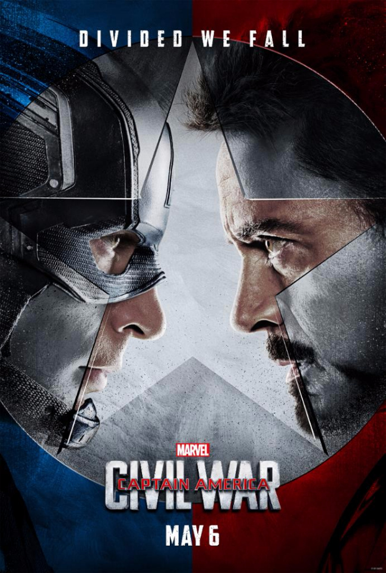
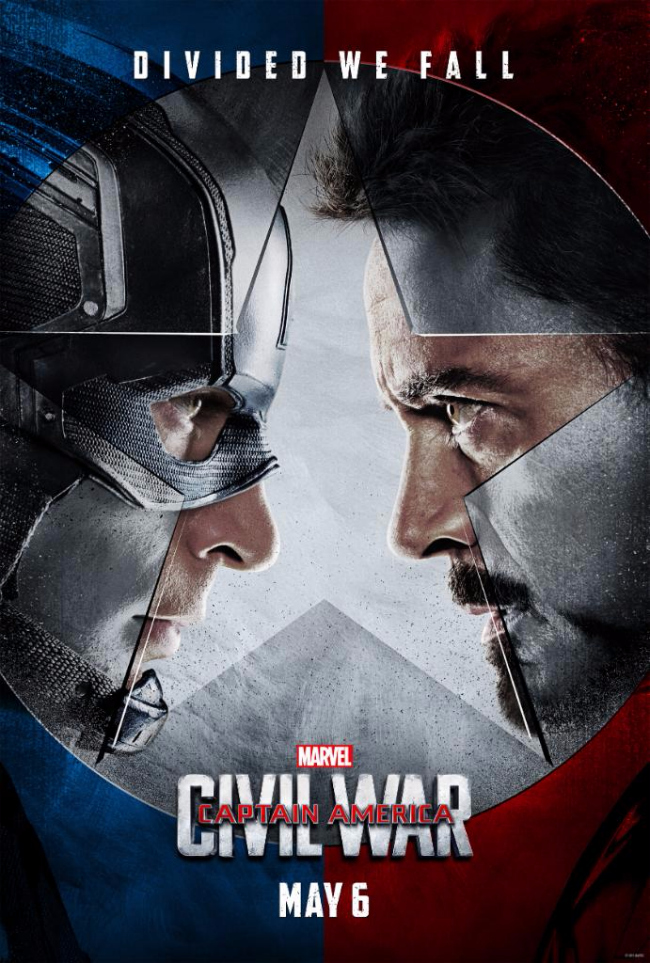

-
">
In the summer of 1959 in Castlerock, Oregon, four 12 year-old boys - Gordie, Chris, Teddy and Vern -fast friends. After learning about the body of a local boy who has been missing for several days, they set off into woods to see it. Along the way, they learn about themselves and eachother. The meaning of friendship and the need to stand up for what is right.
-
">
Based on Truman Capote's novel, this is the story of a young woman in New York City who meets a young man when he moves into her apartment building. He is with an older woman who is very wealthy, but he wants to be a writer. She is working as an expensive escort and searching for a rich, older man to marry.
-

In 1939, newly created British intelligence agency MI6 recruits Cambridge mathematics alumnus Alan Turing (Benedict Cumberbatch) to crack Nazi codes, including Enigma -- which cryptanalysts had thought unbreakable .
Turing's team, including Joan Clarke (Keira Knightley), analyze Enigma messages while he builds a machine to decipher them. Turing and team finally succeed and become heroes, but in 1952, the quiet genius encounters disgrace when authorities reveal he is gay and send him to prison.
-

Remnants of a mysterious animal have come to light in a remote jungle, and a group of scientists intends to determine if the find is an anomaly or evidence of an undiscovered beast.
To accomplish their goal, the scientists (Antonio Moreno, Richard Carlson, Richard Denning, Whit Bissell) must brave the most perilous pieces of land South America has to offer. But the terrain is nothing compared to the danger posed by an otherworldly being that endangers their work and their lives.
-
">
Political pressure mounts to install a system of accountability when the actions of the Avengers lead to collateral damage. The new status quo deeply divides members of the team.
Captain America (Chris Evans) believes superheroes should remain free to defend humanity without government interference. Iron Man (Robert Downey Jr.) sharply disagrees and supports oversight. As the debate escalates into an all-out feud, Black Widow (Scarlett Johansson) and Hawkeye (Jeremy Renner) must pick a side.
-

Based on the popular board game, this comedy begins at a dinner party hosted by Mr. Boddy (Lee Ving), where he admits to blackmailing his visitors.
These guests, who have been given aliases, are Mrs. Peacock (Eileen Brennan), Miss Scarlet (Lesley Ann Warren), Mr. Green (Michael McKean), professor Plum (Christopher Lloyd), Mrs. White (Madeline Kahn) and Col. Mustard (Martin Mull). When Boddy turns up murdered, all are suspects, and together they try to figure out who is the killer.
-

Tomboy Vada Sultenfuss (Anna Chlumsky) has good reason to be morbid: her mother died giving birth to her, and her father (Dan Aykroyd) operates a funeral service out of their home.
The other kids think she's a freak, and it certainly doesn't help that her best friend, Thomas J. Sennett (Macaulay Culkin), is a boy. To make matters worse, Vada is desperately in love with her English teacher , Mr. Bixler (Griffin Dunne). What's an 11-year-old girl to do?
-
">
Set in North Carolina, "A Walk To Remember" follows the rite of passage of a jaded, aimless high school senior (Shane West) who falls in love with a guileless young woman (Mandy Moore) he and his friends once scorned. The two develop a powerful and inspirational relationship in which they discover truths that take most people a lifetime to learn.
-

Hitchcock's romantic story of obsession, manipulation and fear. A detective is forced to retire after his fear of heights causes the death of a fellow officer and the girl he was hired to follow.
He sees a double of the girl, causing him to transform her image onto the dead girl's body. This leads into a cycle of madness and lies.
-
">
In the 1920s, actor George Valentin (Jean Dujardin) is a bona fide matinee idol with many adoring fans. While working on his latest film, George finds himself falling in love with an ingenue named Peppy Miller (Bérénice Bejo) and, what's more, it seems Peppy feels the same way.
But George is reluctant to cheat on his wife with the beautiful young actress. The growing popularity of sound in movies further separates the potential lovers, as George's career begins to fade while Peppy's star rises.
{kind=link}
{kind=link}
!["> Political pressure mounts to install a system of accountability when the actions of the Avengers lead to collateral damage. The new status quo deeply divides members of the team. Captain America (Chris Evans) believes superheroes should remain free to defend humanity without government interference. Iron Man (Robert Downey Jr.) sharply disagrees and supports oversight. As the debate escalates into an all-out feud, Black Widow (Scarlett Johansson) and Hawkeye (Jeremy Renner) must pick a side.](img/war.jpg){kind=link}
{kind=link}
!["> In the 1920s, actor George Valentin (Jean Dujardin) is a bona fide matinee idol with many adoring fans. While working on his latest film, George finds himself falling in love with an ingenue named Peppy Miller (Bérénice Bejo) and, what's more, it seems Peppy feels the same way. But George is reluctant to cheat on his wife with the beautiful young actress. The growing popularity of sound in movies further separates the potential lovers, as George's career begins to fade while Peppy's star rises.](img/art.jpg){kind=link}